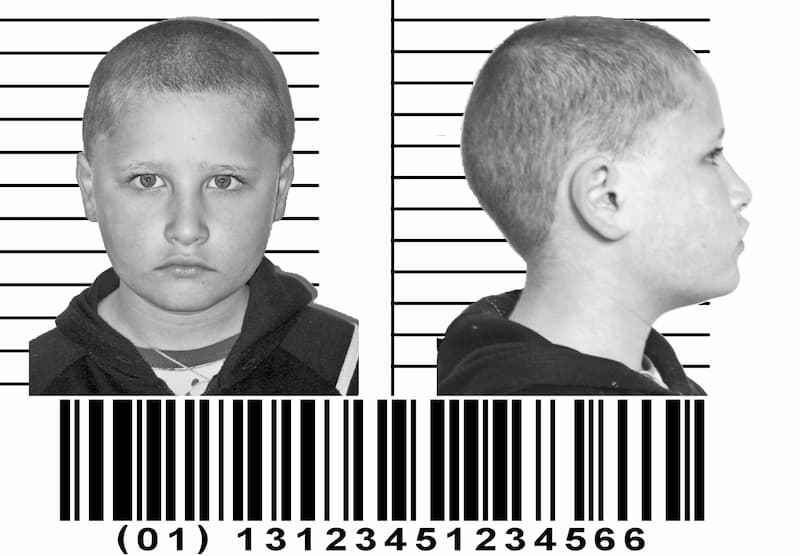

Cînd auzim de mucenicie, ne gîndim numaidecît la chinurile sîngeroase pătimite de toți mărturisitorii Cuvîntului lui Dumnezeu încă înainte și mai ales după întruparea Acestuia, de la dreptul Avel și Sfinții Prooroci uciși de necredincioșii Iudei în felurite chipuri și pînă la mărturisitorii temnițelor comuniste. Și ne minunăm pentru tăria lor neclintită, ne smerim petru slăbiciunea noastră și dăm slavă lui Dumnezeu că trăim într-o vreme cînd – nu-i așa? – putem să-L mărturisim pe Hristos nestingheriți. Iar aceasta e o negrăită înșelare. Într-adevăr, în lumea noastră „civilizată”, nimeni nu mai este zgîriat cu unghii de fier pînă la os, ars, străpuns cu țepușe, zdrobit cu pietre. (Căci omul zilei de azi nici nu ar putea răbda asemenea munci, fiind mult mai gingaș trupește decît cei din vechime.) Dar asta nu înseamnă că mucenicia s-a desființat, ortodoxia (dreapta slăvire) fiind neapărat mucenicie. Doar că muncile nu mai sînt sîngeroase, ci s-au mutat în suflet, adică în inimă și în minte. Căci vicleanul diavol și slujitorii lui sînt azi mult mai iscusiți decît acum două mii de ani, să zicem, iar credincioșii cu mult mai slabi în credință.

Și, întîi de toate, mărturisitorul zilelor noastre este prigonit și muncit de înșiși casnicii săi, după cuvîntul proorocesc al Mîntuitorului: „Și vrăjmașii omului vor fi casnicii lui” (Matei 10:36). Ce vreau să spun este că acum nu mai poți propovădui adevărata evanghelie a lui Hristos nici măcar în familie, fiindcă numaidecît cei apropiați ‑ părinții (atei cu toții, după atîția ani de comunism și apoi de „democrație liberală”), frații, soția ta sau soțul tău - se îndrăcesc vădit împotriva ta, apărîndu-și cu toată îndărătnicia patimile, reaua voință și reaua-credință a „creștinismului” lor antihristic și păgîn (adică „obiceiul” cu toate ale lui: lumînările, mielul, porcul, bradul, Moș Crăciun). Și aceasta ar fi poate de răbdat cumva; lucrul cu adevărat dureros și înfricoșător e smintirea copiilor, din întîia lor zi de viață, prin creșterea lor într-un chip nu păgînesc, ci de-a dreptul drăcesc. (Fiindcă, de pildă, păgînii nu îi învață pe copiii lor neascultarea, precum facem noi în familie și în școală.) Iar acela dintre părinți care încearcă să țină rînduiala ortodoxă este lipsit de orice putere, și aceasta fiindcă rudeniile cele necredincioase și soțul cel necredincios nu sînt nici singuri și nici neputincioși: alături de ei și în spatele lor se află toate instituțiile balaurului antihristic numit „Stat democratic”: adică Școala (întîi de toate), Autoritatea Tutelară, Poliția (amintiți-vă de „telefonul mamei” și de acela „al copilului”) și… Biserica Ortodoxă Română!
Mult mi-a trebuit ca să înțeleg cît sînt de puternice legăturile rudeniilor mele după trup și ale rudeniei mele după Duh (adică soția, prin Taina Căsătoriei) cu Statul balaur. Astfel, nu am priceput de ce părinții botezați și „Creștini practicanți” apără cu înverșunare instituția Școlii, care le smintește copiii către cele mai înfricoșate patimi sufletești și trupești: de la minciună (toată învățătura școlară e mincinoasă, adică de la tatăl minciunii diavolul, hotărît împotriva Scripturii lui Hristos-Dumnezeu), de la neascultare și răzvrătire („drepturile copilului”, care se predau la Educație Civică) și pînă la sodomie și gomorie (citiți manualele de Biologie, care propovăduiesc pe față aceste „comportamente sexuale”). Cum e așadar cu putință (îmi ziceam) ca acești părinți să își lase odraslele pe mîna „doamnelor” (așa le spun copiii analfabetelor „învățătoare” și „profesoare”, „domnii” fiind prea-puțini și oricum fără cuvînt în fața colegelor de cancelarie) și să le ducă flori și acadele de 8 Martie? Precum vedem, este foarte cu putință! – iar acela dintre soți care îndrăznește să osîndească Școala cea sacră, pentru a-și apăra fiii și fiicele, va fi numaidecît hulit de soțul cel „responsabil”, de bunicii copiilor săi, de rudenii și de prieteni. Iar în cele din urmă, dacă stăruie în nebunia lui evanghelică, va fi numit „nebun”, „sectant” și în cele din urmă „îndrăcit” de către ateii „Creștini” ai familiei. Cînd se ajunge aici, „familia” (din care „fanaticul” nu mai face parte) se poate folosi și de ajutorul Poliției („Siguranță și încredere!”), al Autorității Tutelare (?!) și al Tribunalului. Și gata: „nebunul” este decăzut din drepturile părintești și, dacă nu se împacă cu această stare, poate ajunge chiar la pușcărie, pentru binele copiilor săi, firește.1
Iată așadar mucenicia din inimă: să vezi cum acel nevinovat copil pe care l-ai zămislit este educat întru toate patimile, să vezi cum de la o zi la alta își pierde curăția sufletească, și să nu îl poți apăra, tu nefiind ajutat de nicăieri. Fiindcă cine ar trebui să te ajute? Întîi, preotul paroh și, în cele din urmă, ierarhul locului. Dar tocmai aceștia încurajează sminteala umanistă, îndemnîndu-te la „împăcarea” cu minciuna și cu răutatea! Sau, în cea mai fericită împrejurare, zicîndu-ți că el însuși este neputincios (precum și este), fiind și el un biet slujbaș al zisului Stat balaur. Așa stînd lucrurile, într-un tîrziu m-am luminat, pricepînd că toți – rudenii, soție, profesori, preoți și arhierei – sînt slugi ale acestui „Stat Proniator”, care le dă (cît le va mai da!) pîinea lor cea de toate zilele (uneori unsă și cu margarină, dar mai mult fără, chiar uscată și de multe ori mucegăită).
Și, fiindcă am pomenit de slujbașii Bisericii Statului ateu și păgîn și de „teologia” lor pe dos, adică antihristică, trebuie să zicem că aceasta duce la mucenicia gîndită. Fiindcă, în fața ereziilor nebunești („ecumenismul”, de pildă) propovăduite prin toate mijloacele drept „ortodoxie” de înșiși mai-marii Bisericii și de preoți, mintea e ca și arsă cu foc și puterea înțelegătoare se întunecă. (Și, să fim cu luare aminte: chinul acesta l-a pătimit ca om Însuși Mîntuitorul Hristos și, după El, toți Apostolii, care s-au luptat cu „teologia” smintită a arhiereilor, a preoților și a învățătorilor de Lege din vremea lor; care i-au ucis trupește abia cînd și-au văzut dovedită minciuna și reaua voință, neputîndu-i birui prin cuvîntul lor cel putred.) Îmi spunea un prieten ieromonah: Frate, cîteodată mi se pare că, în vremea aceasta, mîntuirea nu mai este cu putință! Oamenii vin la spovedanie și îmi mărturisesc fărădelegi neînchipuite în trecut; îi sfătuiesc și le dau canon, dar ei nici nu gîndesc să se îndrepte! Și vin iarăși, și nu vor să înțeleagă, fiindcă nu au pocăință, păcatul li se pare firesc! La cuvîntul de folos, propovăduiesc cuvîntul Adevărului după învățătura Sfinților Părinți insuflați de Sfîntul Duh-Dumnezeu, iar credincioșii mă socotesc nebun, fiindcă „Biserica” Statului le adoarme conștiința cu umanistele ei dogme rătăcite. Sînt nopți cînd simt că nu mai pot gîndi și mă cuprinde deznădejdea! Greu este cuvîntul acesta de la un părinte cu viață sfințită și bun cunoscător al Scripturilor! Și acesta e iarăși un semn al sfîrșitului, care va veni atunci cînd într-adevăr nu va mai fi cu putință nicicum să trăiești creștinește, precum se întîmplă încă de acum.
Și de ce se întîmplă toate acestea? Fiindcă aproape nimeni – nici dintre enoriași, nici dintre păstorii și învățătorii duhovnicești, nici dintre arhierei – nu vor să primească jertfa, oricare ar fi aceasta; și, mustrați de conștiință, caută să-i împiedice și pe aceia care, deși neputincioși și păcătoși, încearcă măcar să rostească cuvîntul Dumnezeu-Cuvîntului. Pe scurt, mai toată lumea pune în lucrare o „ortodoxie” fără Cruce, fără mucenicie, adică însăși credința Antihristului ce va stăpîni cît de curînd lumea. Așa stînd lucrurile, ce este de făcut? Să primim încercările vremii noastre precum sînt și să punem în lucrare pe cît putem, mai mult ca oricînd, două cuvinte ale Mîntuitorului Hristos. Și anume:
1. „Nu socotiți că am venit să aduc pace pe pămînt! N-am venit să aduc pace, ci sabie! Căci am venit să despart pe fiu de tatăl său, pe fiică de mama sa, pe noră de soacra sa. Și vrăjmașii omului vor fi casnicii lui” (Matei 10:34-36). Cuvînt pe care Sfințitul Teofilact al Bulgariei (în urma Sfîntului Ioan Gură de Aur) îl tîlcuiește după cum urmează:
„Nu întotdeauna este bună unirea, ci uneori și despărțirea este bună. Iar «sabie» este cuvîntul credinței, care ne taie pe noi de la iubirea de prieteni și de rude, dacă aceștia ne împiedică de la buna cinstire de Dumnezeu. Căci nu ne îndeamnă să ne despărțim de aceștia fără pricină, ci numai atunci cînd nu se unesc cu noi în credință și, mai vîrtos, atunci cînd ne împiedică de la credință.”
Iar dumnezeiescul Ioan Scărarul ne învață așa: „N-am venit, zice Domnul, să aduc pace pe pămînt și iubirea părinților față de fii și a fraților față de frații care se hotărăsc să nu-Mi slujească Mie, ci luptă și sabie! Adică să-i despart pe iubitorii de Dumnezeu de iubitorii de lume, pe iubitorii de cele materiale de iubitorii de cele nemateriale, pe iubitorii de slavă de cei smeriți la cuget. Căci Domnul Se bucură de neînțelegerea și de dezbinarea ce se naște din iubirea față de El” (Filocalia românească, vol. 9, Cuvîntul 11: Despre despătimire)
Iar Mîntuitorul urmează:
„Cel ce iubește pe tată ori pe mamă mai mult decît pe Mine nu este vrednic de Mine; cel ce iubește pe fiu ori pe fiică mai mult decît pe Mine nu este vrednic de Mine” (Matei 10:37). Stih pe marginea căruia același Sfințit Teofilact zice:
„Vezi că atunci se cuvine să-i urîm pe născătorii sau pe feciorii noștri, cînd vor voi să-i iubim mai mult decît pe Hristos.”
Deci, mai mult decît oricînd în trecut, sîntem siliți (și încurajați) să ne despărțim de familii, fără a ne călugări neapărat (căci aceasta nu e fără primejdie pentru slăbiciunea noastră). Grea și dureroasă despărțire, mai ales despărțirea de copii, dar folositoare și mîntuitoare! Dar ce este aceasta față de suferința acelor părinți credincioși care și-au văzut copiii uciși în chip sălbatic chiar sub ochii lor, cum a fost de pildă acea sfîntă mamă din vremea Macaveilor, care încă înainte de jertfa și învierea Mîntuitorului își îndemna copiii să meargă la chinuri și la moarte cu toată nădejdea în învierea cea de obște. Căci să citim ce povestește Scriptura:
„Întîmplatu-s-a și cu șapte frați, pe care, împreună cu maica lor prinzîndu-i, i-a silit împăratul [Antioh Epifanie, unul dintre urmașii lui Alexandru Machidon, care stăpînea pe atunci Iudeea] cu biciul și cu vine [de bou] bătîndu-i, să mănînce cărnuri de porc, care nu le era slobod a mînca… Iar unul dintre ei, care a grăit mai întîi, așa a zis: Ce vrei să întrebi și să știi de la noi? Pentru că mai bucuroși sîntem a muri, decît a călca legile părintești. Iar împăratul, umplîndu-se de mînie, a poruncit să înfierbînte tigăi și căldări și, după ce s-au înfierbîntat acelea, îndată a poruncit să taie limba celui care a grăit întîi, apoi să-i jupoaie pielea de pe cap și să-i taie mîinile și picioarele, în fața celorlalți frați și a mamei lor. Și, după ce l-a ciopîrțit așa, a poruncit să-l aducă la foc și să-l frigă de viu. Și, ieșind foarte mare sfîrîială din tigaie, unii pe alții împreună cu mama lor se îndemnau a muri vitejește zicînd așa: Domnul Dumnezeu vede și cu adevărat mîngîiere are dintre noi, precum chiar a arătat prin cîntarea cu care ne-a mărturisit nouă Moisi, zicînd: «…și întru robii Săi Se va mîngîia».
Și, după ce s-a săvîrșit cel dintîi într-acest chip, l-a adus pe al doilea să-l batjocorească. Și, jupuindu-i pielea capului cu părul, îl întreba: Vrei să mănînci carne de porc înainte ca să ți se ciopîrțească toate mădularele trupului? Iar el, răspunzînd în graiul părinților săi, a zis: Nu! Pentru aceea, și acesta a suferit pe rînd toate chinurile ca și cel dintîi și, cînd era să moară, a zis: Așadar tu, nelegiuitule, ne scoți pe noi dintr-această viață, însă Împăratul lumii, pe noi cei care murim pentru legile Lui, iarăși ne va învia cu înviere de viață veșnică!
Și, după aceasta, a fost batjocorit al treilea. Și, cerîndu-i-se limba, îndată a scos-o, și mîinile cu îndrăzneală le-a întins și vitejește a zis: Din Cer le-am dobîndit pe acestea și pentru legile lui Dumnezeu nu țin seamă de ele, pentru că nădăjduiesc că de la El iarăși le voi dobîndi. Așa încît însuși împăratul și cei ce erau cu el se minunau cu spaimă de sufletul tînărului, căci nu ținea seamă de dureri, ca de nimic.
Și, după ce s-a sfîrșit și acesta, l-a adus pe al patrulea, așijderea muncindu-l și chinuindu-l. Și, cînd era să moară, a zis așa: Bine este a muta nădejdile cele de la oameni și a le aștepta pe cele de la Dumnezeu! Căci noi iar vom învia prin El, iar ție nu-ți va fi înviere spre viață.
Și, îndată aducîndu-l pe al cincilea, îl muncea; iar el, căutînd către rege, a zis: Putere între oameni avînd, muritor fiind, faci ce vrei; dar să nu socotești că Dumnezeu a părăsit poporul nostru! Ci tu așteaptă și vei vedea puterea Lui cea mare, cum pe tine și pe urmașii tăi îi va chinui.
Și, după acesta, l-a adus pe al șaselea; și, cînd era să moară, a zis: Nu te înșela în zadar, căci noi pătimim acestea pentru noi înșine, de vreme ce am păcătuit împotriva Dumnezeului nostru și pentru aceasta s-au făcut aceste lucruri vrednice de mirare. Iar tu să nu socotești că vei fi necertat, pentru că faci război împotriva lui Dumnezeu.
Iar mama lor este foarte minunată și vrednică de bună pomenire. Căci, văzînd cum îi pier șapte fii într-o singură zi, a răbdat cu bun suflet, pentru nădejdile ce avea în Domnul. Și pe fiecare din ei îl mîngîia în graiul părintesc și zicea către ei, plină fiind de cuget vitejesc și deșteptînd femeiasca gîndire cu inimă bărbătească: Nu știu cum v-ați zămislit în pîntecele meu și nu eu v-am dat duh și viață și nu eu am întocmit închipuirea fiecăruia. Ci Ziditorul lumii, Care l-a zidit pe om de la nașterea lui, vă va da ca un milostiv iarăși duh și viață, de vreme ce acum nu vă este milă de voi, iubind legile Lui.
Iar Antioh - gîndind că pe el îl defaimă și socotind că pe el îl ocărăște cu acele cuvinte, fiind încă cel mai tînăr viu - nu numai cu cuvintele îl îndemna, ci și cu jurăminte îl încredința că îl va face bogat și fericit, dacă se va lăsa de obiceiurile părintești, și îl va avea de prieten și vrednicii îi va încredința. Iar tînărul, neascultînd, împăratul a chemat-o pe mama sa și o învăța să-l sfătuiască cele ce sînt spre scăpare. Și, îndemnînd-o cu multe, ea a primit că va sfătui pe fiu. Și, aplecîndu-se spre el și înșelîndu-l pe crudul tiran, a zis în limba părintească așa: Fiule, fie-ți milă de mine, care te-am purtat nouă luni în pîntece, și te-am alăptat trei ani, și te-am hrănit, și te-am adus la vîrsta aceasta și te-am crescut, purtîndu-te în brațe. Fiule, rogu-te ca, la cer și la pămînt căutînd și văzînd toate ce sînt într-însele, să cunoști că din ce n-au fost le-a făcut pe ele Dumnezeu și pe neamul omenesc așijderea l-a făcut. Nu te teme de ucigătorul acesta, ci fă-te vrednic de frații tăi! Primește moartea! - ca, în ziua milostivirii, să te găsesc pe tine împreună cu frații tăi. Și, grăind încă ea, tînărul a zis: Pe cine așteptați? N-ascult de porunca împăratului, eu ascult de porunca Legii, care s-a dat părinților noștri prin Moisi. Iar tu, cel care tot răul ai aflat asupra Iudeilor, nu vei scăpa din mîinile lui Dumnezeu. Că noi pătimim pentru păcatele noastre; iar dacă, pentru cercetarea și învățătura noastră, Dumnezeu cel viu S-a mîniat puțin asupra noastră, iarăși cu robii Săi Se va împăca. Ci tu – o necredinciosule și mai nelegiuit decît toți oamenii! – nu te mări tulburîndu-te în deșert și semețindu-te cu niște nădejdi neștiute, ridicîndu-ți mîinile asupra slugilor cerești! Căci încă n-ai scăpat de judecata atot-puternicului Dumnezeu, Cel care le vede pe toate de sus. Căci acum frații mei, care puțină durere au suferit, au ajuns la făgăduința vieții celei veșnice a lui Dumnezeu; iar tu, cu judecata lui Dumnezeu, vei suferi dreaptă pedeapsă de la Dînsul pentru această trufie a ta. Iar eu, precum și frații mei, și trupul și sufletul mi-l dau pentru legile părintești, rugîndu-mă lui Dumnezeu să nu întîrzie a Se milostivi spre poporul acesta și pe tine, prin certări și prin bătăi, să te facă să mărturisești că El singur este Dumnezeu. Iar la mine și în frații mei să se oprească mînia Atotputernicului, care pe dreptate s-a adus peste tot neamul nostru.
Deci, mîniindu-se împăratul pe acesta mai mult decît pe ceilalți, l-a chinuit, amărîndu-se pentru că l-a batjocorit. Deci și acesta, curat întru totul, și-a dat viața nădăjduind spre Domnul. Și mai pe urmă, după fii, s-a săvîrșit și mama” (2 Macabei 7:1-41).
Sau amintiți-vă de pilda bine-credinciosului voievod Constantin Brâncoveanu și a fiilor săi, mai aproape de zilele noastre, pildă pe care ar trebui să o urmăm toți într-un chip sau altul, după puterea noastră.
2. Apoi, Mîntuitorul adaugă: „Și grăia către toți; Oricine va voi să vină după Mine, să se lepede de sine, și să ia crucea sa în toate zilele, și să urmeze Mie!” (Luca 9:23). Și: „Cel ce nu-și ia crucea și nu-Mi urmează Mie nu este vrednic de Mine. Și cine ține la sufletul său îl va pierde, iar cine-și pierde sufletul lui pentru Mine îl va găsi” (la fel, stihurile 38, 39). Iar Sfințitul Teofilact tîlcuiește:
„Și ce zic eu «tată» și «mamă» și «feciori», ci ascultă tu porunca cea prea-înaltă și mare, [adică urmarea pildei Mîntuitorului; Care, pentru noi, Și-a dat viața (ca om) pe cruce]. Adică zice: Cel care nu se va lepăda de viața aceasta și nu se va da morții celei de ocară – căci aceasta era crucea pentru cei din vechime – nu este vrednic de Mine! Deci arată cum că, cine va voi a fi ucenic al Lui, dator este a muri nu cu moarte slăvită, ci de ocară, omorîndu-se ca un osîndit. Dar, fiindcă mulți au fost răstigniți pentru că erau furi și tîlhari, adaugă: «să vină după Mine», adică: Să viețuiască după poruncile Mele!
Și zice: «Cine ține la sufletul său îl va pierde, iar cine-și pierde sufletul lui pentru Mine îl va găsi.»] Căci cel care se îngrijește de viața trupească pare că-și află sufletul, dar îl pierde, pentru că îl trimite la munca cea veșnică. Iar cel care-și pierde sufletul său și moare – nu ca un tîlhar sau ca un ucigaș de sine, ci pentru Hristos – acela își mîntuiește sufletul.”
Iar Sfîntul Isaac Sirul – la întrebarea: Ce înseamnă să se lepede cineva de sine? – răspunde: „Precum cel ce s-a pregătit să se suie pe cruce nu mai ține în cugetarea sa decît gîndul morții și pornește ca un om ce nu se gîndește să mai aibă vreo părticică din viața veacului acesta, așa e și cel ce vrea să împlinească ceea ce s-a spus. Căci crucea este voința care e gata să primească orice necaz. Și, cînd a voit să ne învețe iarăși de ce trebuie să facem așa, Domnul a zis: «Cel ce voiește să viețuiască în lumea aceasta, se va pierde pe sine din viața adevărată; iar cel ce se pierde aici pentru Mine, se va afla pe sine acolo» (Matei 16:24). Acesta e cel ce pășește pe calea crucii și-și pune pașii săi pe ea. Cel ce se îngrijește de viața aceasta, s-a pierdut căzînd din nădejdea prin care a pornit spre suferirea necazurilor. Pentru că grija aceasta nu-l lasă să primească necazul pentru Dumnezeu, ci-l atrage pe încetul din stăruirea în el, și-l scoate din mijlocul luptei pentru viața cea fericită și face să crească în el gîndul acesta, pînă ce-l biruiește. Deci zice: Însă cel ce-și pierde sufletul său, în cugetarea sa, pentru Mine și din dorul de Mine, acela se păstrează nevinovat și nevătămat pentru viața de veci. […] Și să știi că afli viața veșnică atunci cînd disprețuiești viața aceasta. Și, cînd intri în luptă pentru pregătirea aceasta, sînt disprețuite în ochii tăi toate cele socotite dureroase și pricinuitoare de necaz. Căci, cînd mintea se pregătește astfel, nu mai are luptă, nici necaz în vremea primejdiei de moarte. De aceea, trebuie să știi cu dinadinsul că, de nu va urî omul viața lui în lume din dorința vieții viitoare și fericite, nu poate răbda nicidecum necazurile și durerile de tot felul care vin asupra lui în fiecare ceas” (Filocalia românească, vol. 10, Cuvîntul LXXXV).
Iar Cuvioșii Calist și Ignatie Xantopol ne învață astfel: „De dragul poruncilor de viață dătătoare și de dragul credinței în Domnul nostru Iisus Hristos, sîntem datori, cînd timpul o cere, să dăm cu bucurie pînă și sufletul nostru, sau să nu ne cruțăm nici chiar viața noastră. Căci Însuși Domnul nostru Iisus Hristos zice, în privința aceasta, că: «Cine își va pierde sufletul Său pentru Mine și pentru evanghelie, acela îl va scăpa!» (Marcu 8:35). Aceasta, fără îndoială, pentru acela crede și nu se îndoiește că Însuși Dumnezeu-Omul Iisus Hristos, Mîntuitorul este învierea, și viața și tot ce este mîntuire” (Filocalia românească, vol. 8, capul 18).
Dar poate că va întreba cineva: Vor mai fi oare goniți și uciși trupește adevărații credincioși, de vreme ce vrăjmașul diavol și slugile lui îi prigonesc destul prin mijloace nesîngeroase? Vor fi, negreșit, tocmai ca urmare a ieșirii lor din lume, adică din ghearele acestui „sistem” atot-puternic. Fiindcă, în afara acestuia, viețuirea trupească nu va mai fi cu putință, dintr-o pricină foarte simplă: în curînd, toate cele de nevoie vieții în trup – adică hrana, adăpostul, îmbrăcămintea și celelalte – vor putea fi dobîndite doar prin mijlocirea „cardurilor” (drăceștilor cartele) electronice, care se dau numai robilor zisului „sistem”. Pe scurt, ca să nu mai lungim cuvîntul, moartea mucenicească va fi întîi de toate aceea prin înfometare. Amintiți-vă că toate mărfurile sînt însemnate cu „numărul numelui Fiarei”, acel 666 din orice cod de bare, iar cel care nu e însemnat el însuși cu acest număr nu va putea vinde și cumpăra nimic (Apocalipsa 13:16) (precum se întîmplă și acum în Statele Unite).
Note
1 Lucrurile acestea se întîmplă cu adevărat și după același plan, precum am înțeles din mărturisirile unor prieteni și precum am văzut într-o oarecare măsură nemijlocit eu însumi.
Comentarii